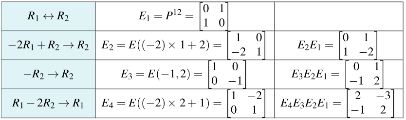

Inverses and Elementary Matrices#
Let \(A\) be an \(m\times n\) matrix, and \(B\) be the reduced row-echelon form of \(A\). Then, we can write \(B =UA\) where U is the product of all elementary matrices representing the row operations applied on \(A\) to obtain \(B\).
Assume that an \(m\times n\) matrix \(A\) is carried to a matrix \(B\) by a series of \(k\) elementary row operations (this is shown as \(A \to B\)). Let \(E_1\), \(E_2\), \ldots, \(E_k\) denote the corresponding elementary matrices.
\(B =UA\) where \(U\) is an \(m\times m\) invertible matrix.
\(U\) can be computed by \([~A~|~I_m~]\to[~B~|~U]\).
\(U = E_{k} E_{k-1} \ldots E_2 E_1\) where \(E_1\), \(E_2\), …, \(E_k\) are the elementary matrices corresponding (in order) to the elementary row operations carrying \(A\) to \(B\).
Example: Let
Find \(B\), the reduced row-echelon form of \(A\) and write it in the form \(B =UA\).
Solution: Reduce the double matrix \([~A~|~I_2~]\to[~B~|~U]\) as follows:
Hence,
Note that in the previous example,
{kind=link}
and
Letting \(B = I\) gives \([~A~|~I~]\to[~I~|~U]\) where \(I =UA\). Thus, with this assumption, \(U = A^{-1}\), so we have
This is the matrix inversion algorithm. However, \(A^{-1} =U = E_k E_{k-1} \ldots E_{2}E_{1}\) where \(E_1\), \(E_2\), \ldots, \(E _k\) are the elementary matrices corresponding (in order) to the row operations carrying \(A~\rightarrow~ I\). Hence
Let \(A\) be an \(n\times n\) matrix (square matrix). Then \(A\) is invertible if and only if it can be written as a product of elementary matrices.
Refrences
Kuttler, Kenneth. “A First Course in Linear Algebra (Lyryx).” (2018).
Nicholson, W. Keith. “Linear Algebra with Applications (Lyryx).” (2018).